Os Maiores Atletas do Brasil
O Brasil é reconhecido mundialmente por revelar atletas que fizeram história em diversas modalidades esportivas. Suas conquistas inspiram milhões de pessoas e demonstram a força do esporte brasileiro.
Conheça alguns dos maiores atletas que representaram e continuam representando o Brasil em competições nacionais e internacionais.
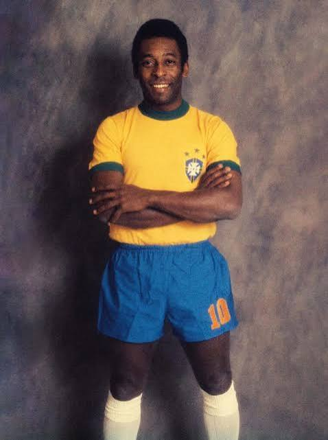
Pelé
Esporte: Futebol
Conhecido como o Rei do Futebol, conquistou três Copas do Mundo e marcou mais de mil gols durante sua carreira.
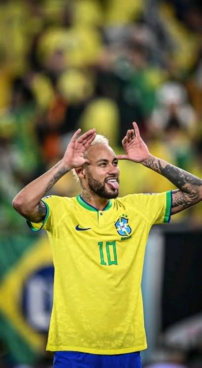
Neymar Jr.
Esporte: Futebol
Maior artilheiro da Seleção Brasileira, campeão da Champions League e medalhista olímpico.
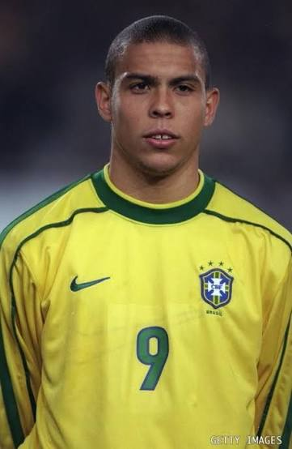
Ronaldo Fenômeno
Esporte: Futebol
Bicampeão mundial e três vezes eleito o Melhor Jogador do Mundo pela FIFA.
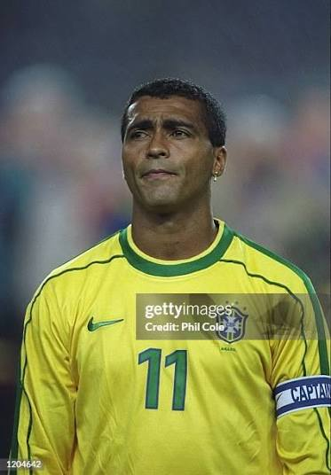
Romário
Esporte: Futebol
Campeão da Copa do Mundo de 1994 e um dos maiores atacantes da história.
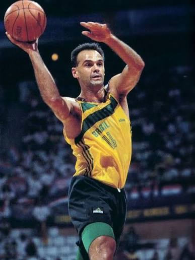
Oscar Schmidt
Esporte: Basquete
Maior cestinha da história do basquete mundial e referência do esporte brasileiro.
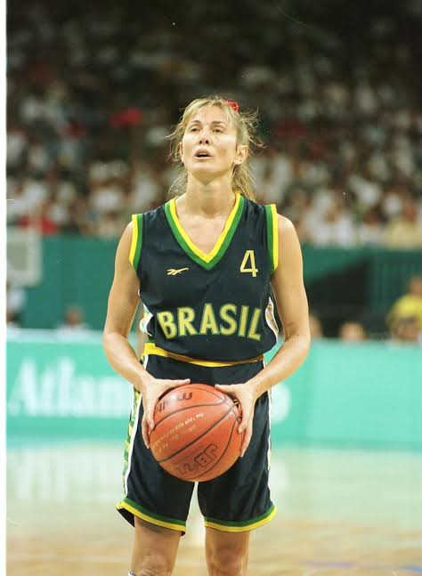
Hortência Marcari
Esporte: Basquete
Campeã mundial e uma das maiores jogadoras da história do basquete feminino.
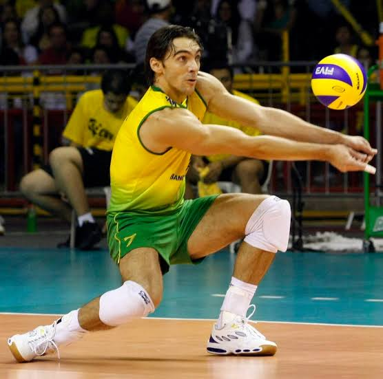
Giba
Esporte: Vôlei
Campeão olímpico, tricampeão mundial e um dos maiores jogadores de vôlei da história.
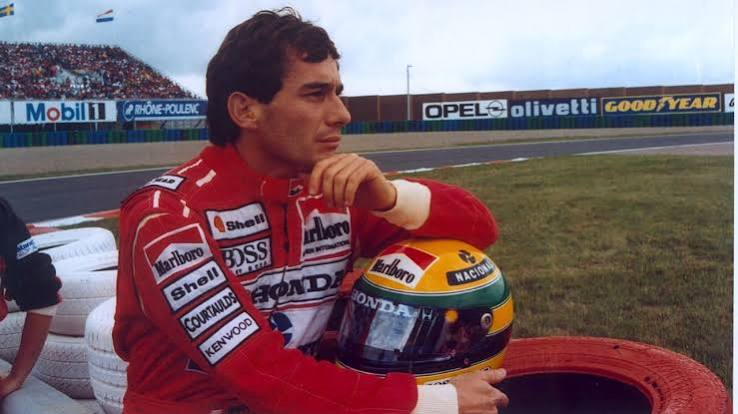
Ayrton Senna
Esporte: Fórmula 1
Tricampeão mundial e considerado um dos maiores pilotos da Fórmula 1.
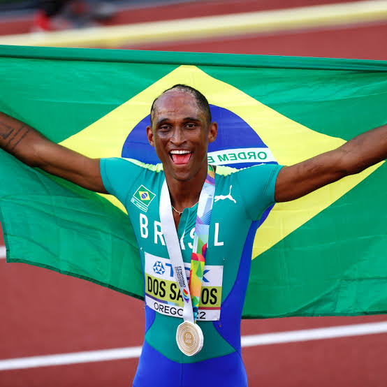
Alison dos Santos (Piu)
Esporte: Atletismo
Campeão mundial e medalhista olímpico nos 400 metros com barreiras.
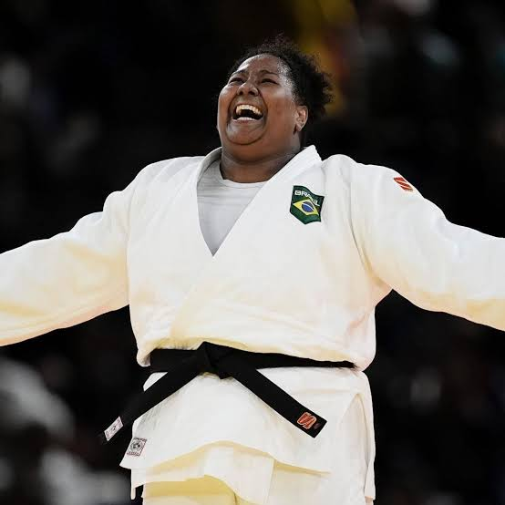
Beatriz Souza
Esporte: Judô
Campeã olímpica e destaque do judô brasileiro.
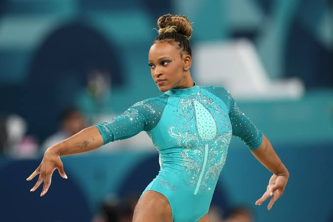
Rebeca Andrade
Esporte: Ginástica Artística
Maior medalhista olímpica da história do Brasil e referência mundial na modalidade.
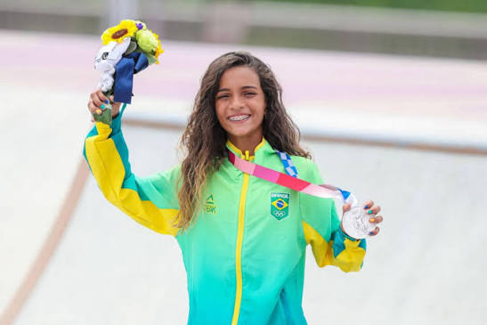
Rayssa Leal
Esporte: Skate
Conhecida como "Fadinha", conquistou títulos mundiais e medalhas olímpicas.
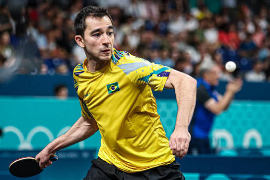
Hugo Calderano
Esporte: Tênis de Mesa
Maior mesa-tenista da história do Brasil e destaque internacional.
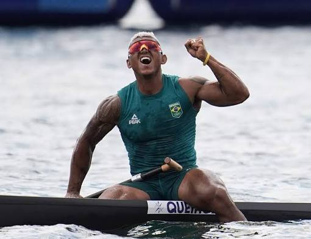
Isaquias Queiroz
Esporte: Canoagem Velocidade
Campeão olímpico e um dos maiores medalhistas brasileiros em Jogos Olímpicos.
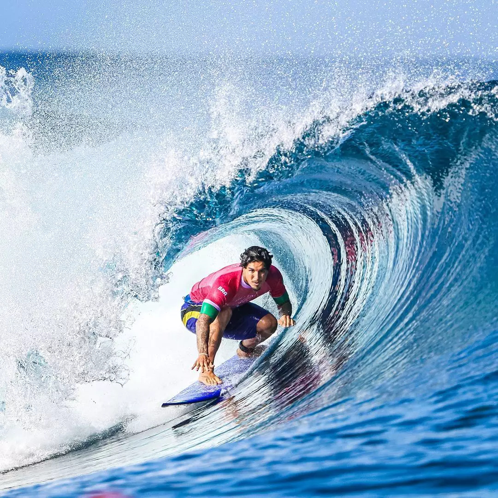
Gabriel Medina
Esporte: Surfe
Primeiro brasileiro campeão mundial de surfe e um dos maiores atletas da modalidade.
Curiosidade
O Brasil já conquistou mais de 170 medalhas olímpicas em diferentes modalidades. Futebol, vôlei, judô, ginástica, atletismo, surfe, skate e canoagem são alguns dos esportes que mais trouxeram conquistas para o país.
O esporte promove saúde, disciplina, inclusão social e trabalho em equipe. Os atletas brasileiros continuam inspirando novas gerações a acreditarem em seus sonhos e representarem o Brasil com orgulho.